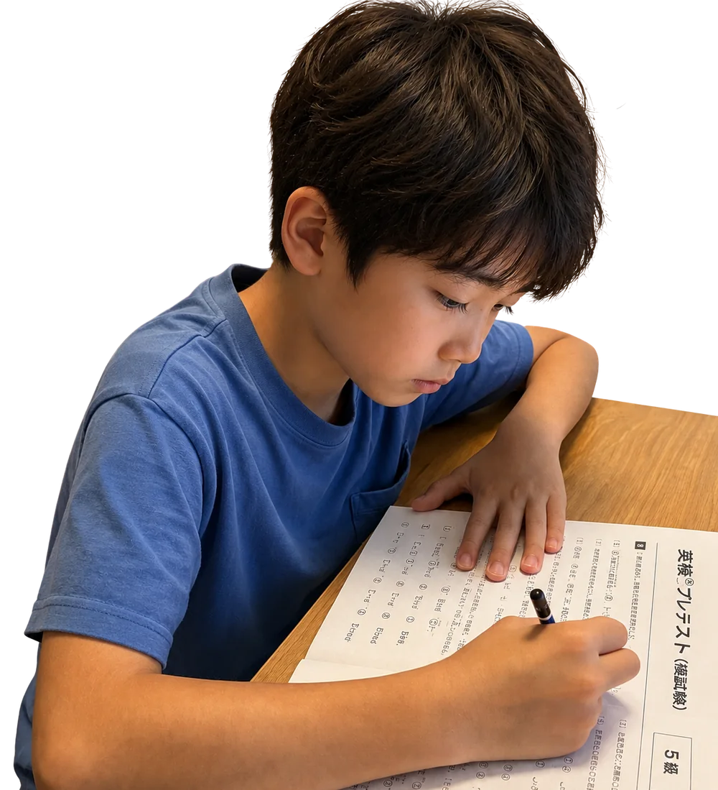

秋の英検®受験を予定している皆さんへ。
20268/30日
申し込みフォーム→ ※お申込み期限：2026年8月21日(金)
「今の実力で合格できそう？」
そんな不安や疑問を解消するために、
今回は、
1
初めて英検®を受験する方は、「準会場ってどんな雰囲気？」「試験はどのように進むの？」「マークシートはどう書くの？」など、不安を感じることも多いと思います。
本番と同じような環境で模擬試験を受けることで、試験当日の流れを事前に体験できます。安心して本番に臨むための練習として、ぜひご活用ください。
2
本番前の実力チェックとして、現在の到達度や課題を確認できる絶好の機会です。
プレテストの結果をもとに、本番までの約1か月で取り組むべき学習内容を明確にし、効率よく合格を目指しましょう。
3
模擬試験終了後には、保護者・生徒・ESL clubスクールマネジャーによる個別相談会を行います。
プレテストの結果をもとに、得意・不得意や今後の学習方法を一緒に確認し、一人ひとりに合わせた学習アドバイスをお伝えします。「あと何点必要？」「家庭ではどんな勉強をすればいい？」など、気になることもお気軽にご相談ください。
みなさまのご参加を心よりお待ちしております！
タイムテーブル
5級10:00～12:15
10:00～10:15
受付、マークシートの練習、個人情報記入の練習
10:20～11:10
模擬試験（Reading & Listening）
11:10～11:20
解答用紙回収、ラップアップ
11:25～11:45
個別相談会①
11:55～12:15
個別相談会②
準2級14:00～16:50
14:00～14:15
受付、個人情報記入の練習
14:20～15:40
模擬試験（Reading & Writing）
15:40～15:55
解答用紙回収、ラップアップ
16:00～16:20
個別相談会①
16:30～16:50
個別相談会②
まずは申し込みフォームよりお申し込みください。お支払い方法については追って、メールでご案内いたします。
お申し込みを受け付けました
ご入力のメールアドレスへ確認のメールをお送りしました。参加費のお支払い手続きのご案内が含まれていますので、ご確認をお願いいたします。
メールが届かない場合は、迷惑メールフォルダをご確認ください。それでも見当たらないときは、お電話（03-3797-3380）でご連絡ください。